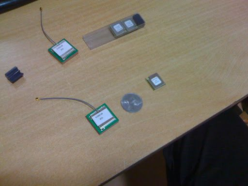

GPS chip for the near-space missionOct 19, 2009 2 min read GPSThe GPS chip, I ordered has just arrived and am starting the work by tomorrow. I chose a SIRF III based custom built GPS chip from Inventek. The reason behind my choice are